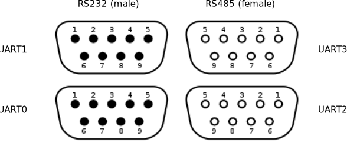

1.1. Application Carrier Board¶
1.1.1. Connecting the application-carrier-board to your development system¶
To run and test applications on your target-device it must be accessible from your development host through ssh and in some cases a serial console would also be required.

1.1.1.1. Power-Plug¶

1.1.1.3. Ethernet¶

1.1.1.4. Sub-D¶
1.1.1.5. Network Connections¶
Make sure your target-board and development host are on the same network and can ping each other. As a default the target-board uses DHCP to get an IP address.
To verify your connection try to login to the target-board via SSH from your host:
$ ssh root@TARGET-IP
Note
Currently there are only development-images in use which do not have a password set for the root-user.
1.1.1.6. Serial Connections¶
Use a USB-Serial-Converter on your development host to connecto to the target-board. Be aware, that you must use a nullmodem cable to connect the converter to the board.
1.1.2. Install required software on your dev-host¶
$ sudo apt-get install picocom